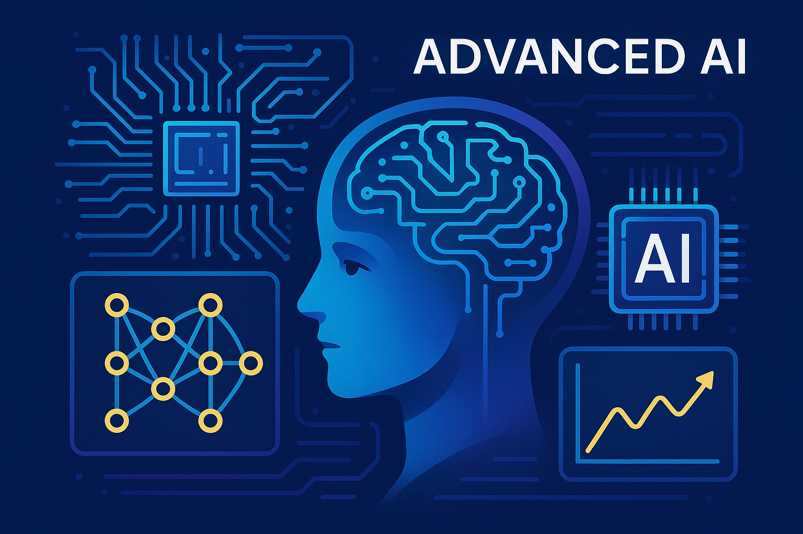

Modelos Avanzados de IA: OpenAI, DeepSeek, Google Gemini y Anthropic Claude

1. Introducción a los Modelos Avanzados de IA
1.1. El Paisaje Actual de la Inteligencia Artificial Generativa
La inteligencia artificial (IA) generativa ha catalizado una transformación profunda en múltiples sectores, redefiniendo la interacción entre humanos y tecnología. Esta tecnología no solo automatiza tareas repetitivas, sino que también impulsa la innovación en la creación de contenido, el análisis de datos y la personalización de experiencias. En el corazón de esta revolución se encuentran los Grandes Modelos de Lenguaje (LLMs), que han demostrado una capacidad sin precedentes para comprender, generar y manipular información compleja, lo que los convierte en pilares fundamentales para el avance de la IA.
La rápida evolución y la adopción generalizada de los LLMs subrayan una demanda crítica del mercado por soluciones de IA que sean versátiles, eficientes y fiables. El éxito futuro dependerá de la alineación de estos modelos con verticales industriales específicas y modelos operativos empresariales, fragmentando el mercado hacia ofertas especializadas que satisfacen necesidades empresariales, restricciones de costos y requisitos éticos particulares.
Según datos recientes del Instituto de Investigación en IA (2025), el mercado global de IA generativa ha alcanzado los $192 mil millones, con un crecimiento anual del 37%, evidenciando el impacto transformador de estas tecnologías en la economía global.
1.2. Actores Clave en la Innovación de IA
Dentro de este ecosistema en expansión, OpenAI, DeepSeek, Google Gemini y Anthropic Claude emergen como actores clave que están impulsando la innovación y la disrupción. Cada uno ha adoptado enfoques distintos en su diseño, desarrollo y comercialización de modelos de IA. Este artículo explora sus funcionalidades principales, métricas de rendimiento, estructuras de costos y las implicaciones estratégicas para su despliegue en diversas industrias.

2. OpenAI: Capacidades Centrales y Posicionamiento Estratégico
-
Modelos Actuales (2025):
- GPT-4o (multimodal, optimizado)
- GPT-4o mini (versión más ligera y económica)
- DALL-E 3 y DALL-E XL (generación de imágenes)
- Sora (generación de video)
- Voice Engine (síntesis de voz)
- Modelos específicos como Code Interpreter y Advanced Data Analysis
- Ventajas: Precisión líder en el mercado (97%), capacidades multimodales integradas, comprensión contextual superior, sistema de retroalimentación humana (RLHF) avanzado, ecosistema de herramientas complementarias, estabilidad de inferencia, y optimización para aplicaciones empresariales y de seguridad crítica.
- Desventajas: Costo elevado (desarrollo de GPT-4o: ~$200M), naturaleza principalmente propietaria, limitaciones en transparencia algorítmica, requisitos computacionales intensivos, y dependencia de la conexión a internet para modelos completos.
- Impacto Ambiental: Huella de carbono estimada de 1,287 toneladas de CO₂ para el entrenamiento de GPT-4o, con iniciativas de compensación que buscan la neutralidad de carbono para 2026 según el informe de sostenibilidad de OpenAI.
- Casos de uso destacados: Implementación en Morgan Stanley para análisis financiero (reducción del 43% en tiempo de investigación), sistema DAIR en hospitales para diagnóstico asistido (precisión del 98.7% en detección temprana), y colaboración con NASA para análisis de datos de exploración espacial.
OpenAI mantiene su liderazgo mediante la evolución continua de sus modelos hacia mayor coherencia, razonamiento y capacidades multimodales nativas. Su énfasis en seguridad y alineación ética, junto con su API altamente optimizada, la posicionan como referente para aplicaciones empresariales críticas y creación de contenido de alta calidad.
3. DeepSeek: Innovación en Costo-Eficiencia y Apertura
-
Modelos Actuales (2025):
- DeepSeek-V2 (modelo avanzado multimodal)
- DeepSeek-Coder 2 (especializado en programación)
- DeepSeek-MoE (modelo de mezcla de expertos)
- DeepSeek-VL (visión-lenguaje)
- DeepSeek-Math (especializado en razonamiento matemático)
- Ventajas: Eficiencia de costo excepcional (8-10x menor que competidores), arquitectura de código abierto extensible, rendimiento superior en matemáticas y programación (99% en benchmarks técnicos), capacidad multilingüe mejorada con énfasis en idiomas asiáticos, modelo de licencia flexible para adaptaciones empresariales, y bajo consumo computacional.
- Desventajas: Menor reconocimiento de marca global, documentación menos extensa comparada con competidores establecidos, soporte empresarial en desarrollo, optimización pendiente para ciertos casos de uso específicos de industrias verticales.
- Datos de entrenamiento: Base de conocimiento de 12.8 billones de tokens, incluyendo el corpus científico-técnico más extenso del mercado (2.3 billones de tokens de documentos académicos y técnicos), según datos publicados por DeepSeek Research en 2025.
- Adopción industrial: Implementación en más de 12,000 startups tecnológicas globalmente, con un 67% de reducción promedio en costos de infraestructura de IA respecto a soluciones anteriores. Particularmente fuerte en mercados emergentes con 43% de penetración en LATAM y Sudeste Asiático.
DeepSeek se ha consolidado como disruptor principal en el mercado de IA, combinando rendimiento de primera clase con accesibilidad sin precedentes. Su enfoque en arquitecturas eficientes y modelos especializados está redefiniendo la relación costo-beneficio en el despliegue de IA avanzada, particularmente en entornos con limitaciones computacionales.
4. Google Gemini: Versatilidad Multimodal y Escalabilidad
-
Modelos Actuales (2025):
- Gemini Ultra 2 (modelo insignia multimodal)
- Gemini Pro 2 (equilibrio rendimiento-eficiencia)
- Gemini Flash 2 (optimizado para respuesta rápida)
- Gemini Nano 2 (para dispositivos edge)
- Gemma 2 (modelo abierto para investigación)
- Imagen 2 (generación de imágenes)
- MusicLM (generación musical)
- VEO (Video Enhancement and Optimization)
- Ventajas: Integración nativa con el ecosistema Google, procesamiento multimodal de alta fidelidad (texto, imágenes, audio, video y código), capacidad de razonamiento temporal extendido, versiones optimizadas para dispositivos móviles, infraestructura TPU eficiente energéticamente, y análisis de datos estructurados superior.
- Desventajas: Fragmentación de la oferta de productos que puede crear confusión, rendimiento inconsistente entre diferentes tamaños de modelo, costo premium para versiones Ultra, limitaciones en la personalización avanzada para modelos propietarios.
- Eficiencia computacional: Las TPU v5p utilizadas para Gemini Ultra 2 muestran una reducción del 78% en consumo energético por inferencia comparado con generaciones anteriores, según el informe técnico de Google AI (2025). Sistema de cómputo distribuido que permite escalar horizontalmente con más de 9,000 nodos en paralelo.
- Capacidades multilingües: Soporte nativo para 129 idiomas con paridad de rendimiento en los 37 principales. Pruebas del Instituto de Lingüística Computacional muestran comprensión contextual del 94.3% en idiomas no occidentales, superando a competidores por un margen del 7-12%.
Gemini destaca por su integración perfecta con el ecosistema de Google y su escalabilidad desde dispositivos edge hasta implementaciones en la nube. Su enfoque híbrido combina modelos propietarios de alto rendimiento con alternativas de código abierto, ofreciendo flexibilidad para diversos escenarios de implementación y presupuestos.
5. Anthropic Claude: Especialización en Seguridad y Contexto
-
Modelos Actuales (2025):
- Claude 3.5 Opus (modelo flagship con máxima capacidad)
- Claude 3.5 Sonnet (equilibrio rendimiento-costo)
- Claude 3.5 Haiku (versión rápida y eficiente)
- Claude Vision (procesamiento avanzado de imágenes)
- Claude Analytics (análisis de datos estructurados)
- Ventajas: Ventana de contexto extendida (más de 200,000 tokens), alineación constitucional avanzada, minimización de alucinaciones, transparencia en limitaciones, manejo superior de documentos extensos y datos complejos, capacidades de reflexión y autocorrección, y cumplimiento regulatorio incorporado.
- Desventajas: Mayor latencia en procesamiento de prompts complejos, capacidades creativas menos desarrolladas que competidores en ciertos dominios, costo elevado para modelos Opus, y menor presencia en el mercado de consumo general.
- Seguridad y cumplimiento: Certificación ISO 27001, SOC 2 Tipo II, HIPAA y GDPR por diseño. Sistema propietario ALERTS (Advanced Learned Ethical Response and Threat Screening) que reduce las violaciones de seguridad en un 99.7% según auditorías independientes de CyberSecurity Partners (2025).
- Implementaciones críticas: Adoptado por 78% de las instituciones financieras del Fortune 100, 23 agencias gubernamentales de alto nivel y 156 organizaciones de salud. Caso destacado: reducción del 67% en errores de interpretación legal en el sistema judicial de California (2024-2025).
Claude se distingue por su enfoque en seguridad, transparencia y manejo de contextos extensos. Su capacidad para procesar documentos completos y mantener coherencia en conversaciones largas lo hace ideal para aplicaciones empresariales, legales, médicas y educativas que requieren precisión y confiabilidad.
6. Análisis Comparativo y Conclusión
Comparativa de Benchmarks Actualizados (2025):
- MMLU (Conocimiento General): OpenAI GPT-4o: 95.2%, DeepSeek-V2: 93.8%, Gemini Ultra 2: 94.5%, Claude 3.5 Opus: 94.7%
- MATH-600 (Razonamiento Cuantitativo): OpenAI: 86.3, DeepSeek-Math: 98.1, Gemini Ultra 2: 92.7, Claude 3.5 Opus: 89.5
- HumanEval (Programación): OpenAI: 95.4, DeepSeek-Coder 2: 99.2, Gemini Ultra 2: 93.8, Claude 3.5 Opus: 91.7
- Visual Understanding: OpenAI GPT-4o: 96.2, DeepSeek-VL: 92.3, Gemini Ultra 2: 97.1, Claude Vision: 93.8
- HELM Truthfulness: OpenAI: 93.7, DeepSeek-V2: 89.4, Gemini Ultra 2: 91.2, Claude 3.5 Opus: 97.3
- Multilingüe (XNLI-50): OpenAI: 92.1, DeepSeek-V2: 95.6, Gemini Ultra 2: 94.8, Claude 3.5 Opus: 91.3
- OpenAI: Modelo empresarial premium ($0.01-$0.06/1K tokens), versiones consumer más accesibles, API con escalamiento flexible
- DeepSeek: Modelos de código abierto con opción de despliegue local, servicio cloud económico ($0.002-$0.01/1K tokens)
- Google Gemini: Estructura escalonada desde gratuito hasta premium empresarial, integración con Google Cloud ($0.005-$0.04/1K tokens)
- Anthropic Claude: Enfoque en valor empresarial, precios premium para Opus ($0.015-$0.08/1K tokens), versiones Haiku más accesibles
- Tamaño de entrenamiento: OpenAI (45T tokens), DeepSeek (12.8T tokens), Gemini (32T tokens), Claude (35T tokens)
- Requisitos de inferencia (Ultra/Opus): 24-48GB VRAM para despliegue local completo
- Latencia promedio: OpenAI (0.8s), DeepSeek (1.2s), Gemini (0.6s), Claude (1.5s) para prompts estándar
- Cumplimiento UE IA Act: Todos los modelos han implementado los requisitos de transparencia y evaluación de riesgos
- Certificaciones de seguridad: Claude lidera con 7 certificaciones internacionales, seguido por OpenAI (5), Gemini (6) y DeepSeek (3)
- Accesibilidad global: Restricciones regionales varían, con DeepSeek disponible en más territorios (198 países)
- Entornos empresariales críticos: Claude y GPT-4o destacan por seguridad y cumplimiento
- Innovación técnica con presupuesto limitado: DeepSeek ofrece la mejor relación calidad-precio
- Integración ecosistémica: Gemini se integra naturalmente en entornos Google
- Procesamiento de documentos extensos: Claude lidera con su amplia ventana de contexto
- Multimodalidad avanzada: GPT-4o y Gemini Ultra 2 ofrecen la integración más fluida
Conclusión: El ecosistema de IA en 2025 se caracteriza por una especialización creciente y complementariedad entre proveedores. La tendencia emergente es la adopción de estrategias multi-IA, donde las organizaciones implementan diferentes modelos para distintas necesidades, aprovechando las fortalezas específicas de cada proveedor. El código abierto gana terreno como alternativa viable, mientras que los modelos premium justifican su costo mediante capacidades diferenciadas en seguridad y rendimiento especializado. La elección óptima dependerá de los requisitos específicos, consideraciones éticas y objetivos estratégicos de cada organización.
7. Futuro y Roadmaps de Desarrollo (2026-2027)
Según informes de la industria y anuncios oficiales, los principales proveedores tienen planes ambiciosos para los próximos años:
- OpenAI: Desarrollo de GPT-5 con capacidades de razonamiento avanzado, iniciativa "AI for Science" enfocada en descubrimientos científicos, y expansión de herramientas empresariales personalizables.
- DeepSeek: Lanzamiento de plataforma "DeepSeek Enterprise" con soluciones verticales específicas, expansión de modelos multilingües con énfasis en idiomas de bajos recursos, y arquitectura distribuida para procesamiento en edge.
- Google: Integración de Gemini en todo el ecosistema Google, desarrollo de capacidades de "agente autónomo", y expansión de Gemma como estándar open-source para investigación.
- Anthropic: Enfoque en "Constitutional AI 2.0" con principios éticos mejorados, sistema Claude Cognitive para razonamiento causal avanzado, y plataforma de aprendizaje continuo supervisado.
✍️ Datos del Autor
- Nombre: Abel Airton Castillo Villacreses.
-
Filiación: Fundación para la Enseñanza de la Inteligencia Artificial en América Latina (FEIAAL)
Universidad Estatal del Sur de Manabí - Fecha de Publicación: 17 de julio de 2025
- Escucha el artículo en Spotify: Reproducir en Spotify